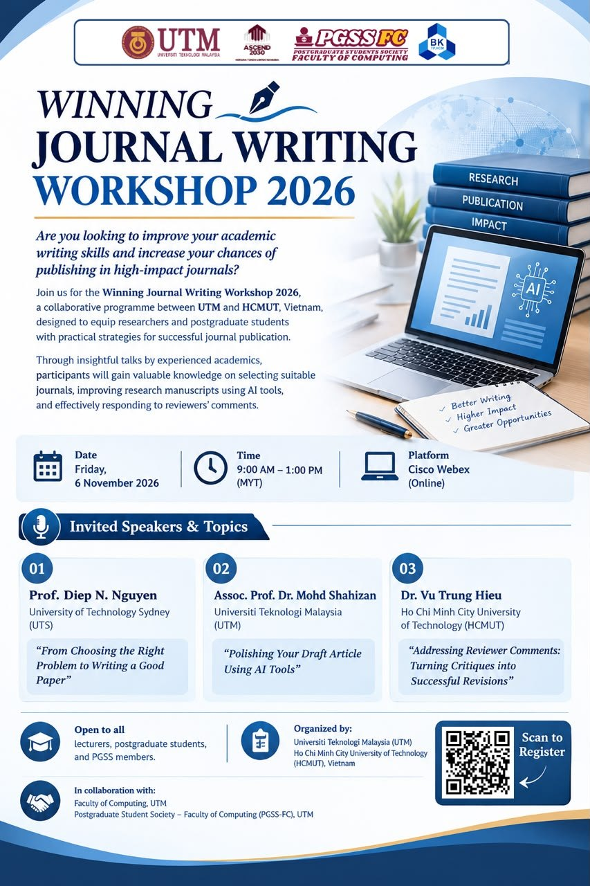

New to AI for writing
Learn the rules first, then try one tool on one paragraph.
Winning Journal Writing Workshop 2026 · UTM & HCMUT
Polishing Your Draft Article Using AI Tools. A practical session on refining your draft manuscript with AI, ethically and accountably, for journals ranked Q1/Q2 in Web of Science.
Open to all lecturers, postgraduate students and PGSS members. Đọc tóm tắt bằng tiếng Việt

Start here
Learn the rules first, then try one tool on one paragraph.
Work section by section, one focused prompt at a time.
Check references, disclosure and formatting before the editor does.
Turn critiques into a clear, courteous revision.
About the workshop
The Winning Journal Writing Workshop 2026 is a collaborative programme between Universiti Teknologi Malaysia (UTM) and Ho Chi Minh City University of Technology (HCMUT), Vietnam, designed to equip researchers and postgraduate students with practical strategies for successful journal publication. This page covers the session on improving research manuscripts using AI tools.
Many researchers have strong findings, yet their manuscripts are rejected because the writing is unclear, the structure is weak or the contribution does not stand out. This session shows how to use AI tools to improve the clarity, argument and language of a draft you have already written, while complying with publisher policies and keeping your own voice as an author.
Every AI output is checked by a human. Every reference is verified against the original source. Every use of AI is disclosed in line with the journal's policy.
Learning outcomes
Who should attend
12 modules · 84 discussion topics
Each module has its own page listing the topics covered, why they matter and what you take away.
Where legitimate assistance ends and publication misconduct begins.
8 topicsWhat editors look for before a manuscript ever reaches a reviewer.
5 topicsThe right tool for the right task.
7 topicsThe quality of the output depends on the quality of the instruction.
8 topicsEvery section has its own job and its own pitfalls.
13 topicsClear writing makes it easier for reviewers to judge your ideas.
10 topicsPolished language cannot rescue a weak argument.
5 topicsOne fabricated reference can undermine the credibility of an entire manuscript.
6 topicsSmall details that shape the editor's first impression.
5 topicsAnticipate criticism before it arrives.
5 topicsKnow when not to trust the output.
7 topicsBringing everything together into a repeatable routine.
5 topicsInvited speaker
Universiti Teknologi Malaysia (UTM)
Assoc. Prof. Dr. Mohd Shahizan Othman is a Fellow of the UTM Big Data Centre and a lecturer at Universiti Teknologi Malaysia. He trains researchers and postgraduate students in AI-assisted research, from literature discovery to academic writing, with an emphasis on academic integrity and responsible use.
More short courses: github.com/drshahizan
Before the session
After the session
Friday, 6 November 2026 · 9:00 AM – 1:00 PM (MYT) on Cisco Webex (online). Register first, then use the Webex details below on the day.
Organised by
In collaboration with
Frequently asked questions
Register through the official form at forms.gle/gkNi6a5dqNoLiU2EA. The session is open to all lecturers, postgraduate students and PGSS members.
Open the Webex meeting link on the home page, or join with meeting number 2510 987 6115 and password PgD2zMZPn53. Join a few minutes early to check your audio.
No. This session focuses on polishing a draft you have already written. Ideas, data, analysis and findings remain the authors' responsibility.
Most major publishers allow AI for improving language and readability, provided its use is disclosed and supervised by the authors. Policies differ between publishers and change over time, so check the current policy of your target journal.
No. The session starts with the fundamentals and builds towards more advanced techniques.
A laptop with a stable internet connection, the Cisco Webex app or browser access, an account with at least one AI chatbot, and your own draft article or abstract.
It depends on the tool's terms. Avoid uploading sensitive data or participant information, and check the tool's privacy settings and your institution's policy.
AI detectors are unreliable and can produce false positives. A safer approach is honest disclosure, careful human editing and keeping your own voice as an author.